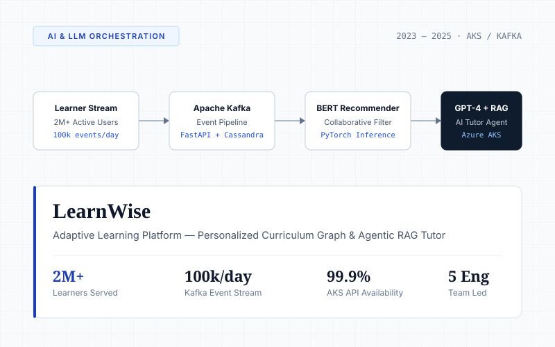

Architecture Case Study
LearnWise — Adaptive Learning Platform

Adaptive Learning Platform with LLM & Event-Driven Architecture
LearnWise is an enterprise-scale educational platform built to personalize curriculum paths for over 2 million learners. As Lead Architect and AI Engineer, I directed the technical design and led an engineering team of 5 to deliver a resilient, high-throughput backend paired with production-grade agentic AI capabilities.
System Architecture & Engineering Highlights
- Dual-Model Recommendation Engine: Combined collaborative filtering with contextual BERT embeddings to generate personalized learning paths tailored to student mastery and velocity.
- High-Throughput Event Streaming: Architected real-time progress pipelines consuming and processing over 100,000 events/day using Apache Kafka streams and Cassandra storage.
- Agentic AI Tutoring Assistant: Integrated GPT-4 with Retrieval-Augmented Generation (RAG) deployed on Azure Kubernetes Service (AKS) for multi-step reasoning and curriculum tool calls.
- Engineering Leadership: Led a team of 5 engineers through architecture design sessions, strict API contracts, and code review standards.
Key Outcomes & Metrics
2M+
Active learners served
100k/day
Kafka event throughput
5 Engineers
Cross-functional team led
Project Specifications
- RoleLead Architect & AI Engineer
- Timeline06/2023 – 06/2025
- DomainDistributed Backend & LLM
- Scale2M+ Users, 100k events/day
- InfrastructureAzure Kubernetes (AKS)
Technology Stack
FastAPI
Cassandra
Apache Kafka
PyTorch
LangChain
GPT-4
BERT
AKS